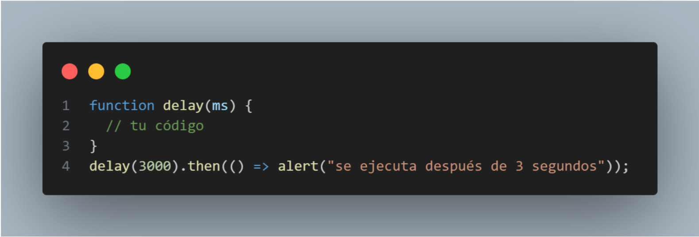

10. La función incorporada setTimeout utiliza callbacks. Crea una alternativa basada en promesas.
La función delay(ms) debería devolver una promesa. Esa promesa debería resolverse después de ms milisegundos, para que podamos agregarle. then, así:
